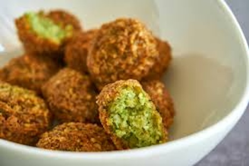

Quick falafels
Home Page

Description
This isn't much of a recipe rather just a mix of foods I enjoy together. It uses falafel balls from any shop and a mix of other ingredients.
Ingredients
- Any falafel balls to cook from a shop
- Coleslaw
- Eggs
- Chilli crisp
- Salt
- Pepper
- Orange juice
Steps
- Put the falafel balls in the airfryer for 10 minutes at 180 oC - As many as desired
- Wait about five minutes
- Cook the eggs
- If frying put hot water on the pan and crack eggs in then fry for a minute before putting on a cover and frying for another two minutes and season with salt and pepper
- If scrambling heat butter in a pot and crack eggs in then whisk around with a fork for a few minutes and add a little bit of milk and season with salt and pepper
- Plate falafels and eggs
- Add coleslaw to the plate
- Pour chilli crisp over the eggs
- Pour a glass of orange juice
- Enjoy